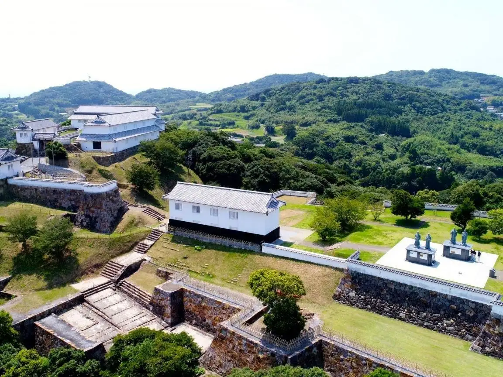
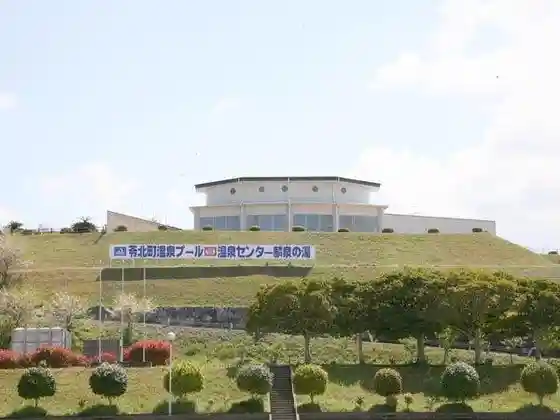
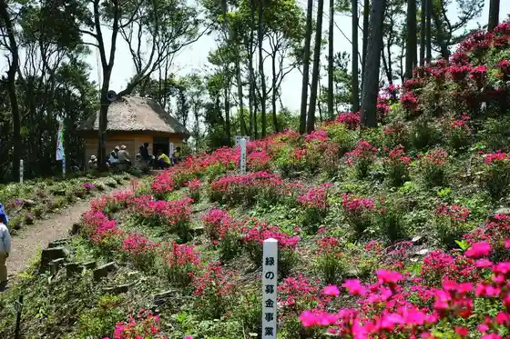
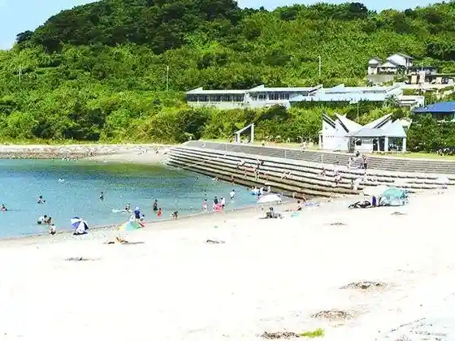
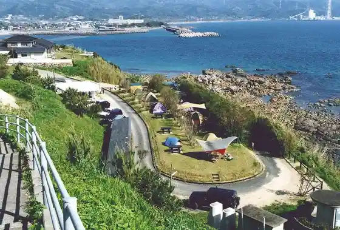

Japan / Kumamoto / Reihoku
Reihoku
Reihoku · Kumamoto
Reihoku
Highlighted on the Kumamoto map.

Sights
Reihoku Onsen Center Rin Izumi Baths
Reihoku, Kumamoto · 0969-35-3770 · Official / source link

Tenjiku
Reihoku, Kumamoto · 0969-35-1111 · Official / source link

Tomioka Shiro Park
Reihoku, Kumamoto · 0969-35-1111 · Official / source link
Tomioka Beach
Reihoku, Kumamoto · 0969-35-1111 · Official / source link

Shiroiwa Saki Campground
Reihoku, Kumamoto · 0969-31-1136 · Official / source link

Oppai Iwa
Reihoku, Kumamoto · 0969-35-1111 · Official / source link
Tomioka Kaiiki Koen Tembo Tokoro
Reihoku, Kumamoto · 0969-35-1111 · Official / source link
Shiki Saki Misaki Park
Reihoku, Kumamoto · 0969-35-3332 · Official / source link
Shiki Castle Ruins
Reihoku, Kumamoto · 0969-35-1111 · Official / source link
Amakusashiro Josen no Chi
Reihoku, Kumamoto · 0969-35-1111 · Official / source link
Tomioka Bijita Center
Reihoku, Kumamoto · 0969-35-0170 · Official / source link
Shiroiwa Saki Coast
Reihoku, Kumamoto · 0969-35-1111 · Official / source link
Uchida Sarayama Yaki
Reihoku, Kumamoto · 0969-35-0222 · Official / source link
Reihoku History Museum
Reihoku, Kumamoto · 0969-35-0712 · Official / source link